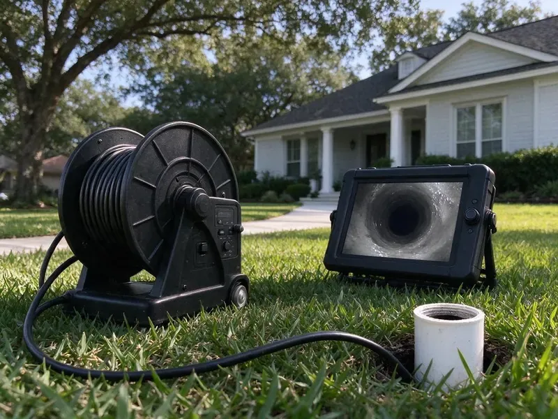
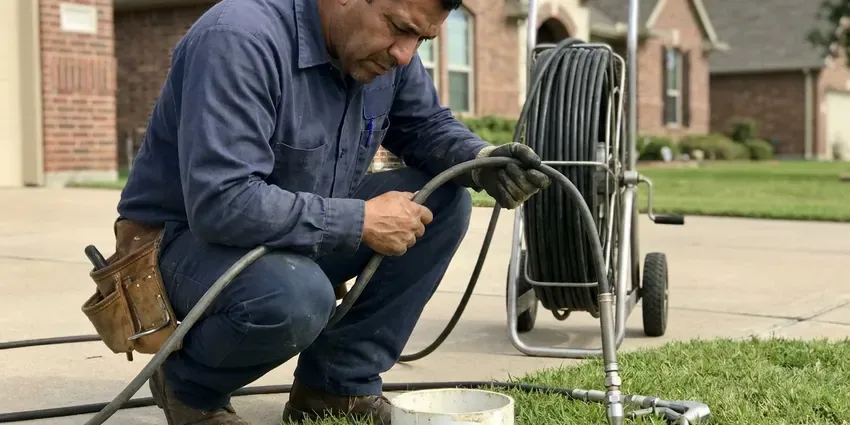

Sewer Line Replacement in West Fargo, ND
When your sewer pipe is cracked, collapsed or full of roots, our West Fargo, ND team replaces it with tough PVC or HDPE built to last.
- Permits and Inspections Handled
- Quick, Reliable Service
- Upfront Pricing
- Trenchless Options Available

Your Trusted Plumbers for Sewer Line Replacement in West Fargo, ND.
We provide prompt, professional sewer line replacement service across North Dakota.
Reliable Sewer Line Replacement Services in West Fargo, ND
HPN Plumbing installs new sewer pipe using materials like SDR 35 or Schedule 40 PVC, and HDPE for trenchless bursting. Every job includes proper slope, bedding, cleanouts and the permits and inspections your city requires.
Our expertise includes:
- Main Sewer Line Re-Piping and Upgrades
- Two-way cleanout installation at the foundation
- Trenchless pipe bursting with fused HDPE pipe

Additional Drain Services Services in West Fargo, ND
From stubborn kitchen clogs to main sewer backups, our drain services in West Fargo, ND restore full flow fast and keep it that way.




Hydro Jetting near West Fargo


Customers
Why Choose HPN Plumbing for Sewer Line Replacement in West Fargo, ND?
Our crews handle the entire project from locating and permits to restoration. You deal with one company and one point of contact.
- Code-Compliant Install, New pipe is set to correct slope with approved materials and inspected cleanouts.
- Site Restoration, We backfill, compact and restore the work area as part of the project.
- Quality Materials, We use tough, high-grade piping materials designed to hold up in North Dakota conditions.
Citywide Coverage
We understand the challenges between areas within West Fargo when it comes to plumbing infrastructure. Our local knowledge helps us provide sewer line replacement tailored to the demands of your property.
Experienced Team
Our team of licensed plumbers has broad experience with sewer line replacement projects across North Dakota. They are fully trained in both traditional excavation and modern trenchless technology.
Safety-First Approach
Every sewer replacement is permitted and inspected according to local code. We call for utility locates before any digging to protect gas, water and electric lines.
Trusted Certified West Fargo Plumbing Services Professionals
At HPN Plumbing, we take pride in providing certified plumbing services throughout West Fargo, ND. Backed by leading industry credentials, our experienced plumbers combine technical skill with genuine customer care. Whether it is repair, installation, or maintenance, we follow strict safety and quality standards to deliver lasting results you can trust.
Call Us Now PHCC Plumbing Contractor Recognition
PHCC Plumbing Contractor Recognition Better Business Bureau (BBB) Accreditation
Better Business Bureau (BBB) Accreditation Angi Certified Pro
Angi Certified Pro ISO 9001 Quality Management Certification
ISO 9001 Quality Management CertificationDependable Sewer Line Replacement Services in West Fargo, ND
Trenchless Pipe Bursting in West Fargo
Pipe bursting replaces the old sewer line by pulling a new pipe through the path of the old one. A bursting head breaks the old pipe outward while fused HDPE pipe follows behind. This typically needs only an entry pit and an exit pit instead of a long trench. It works well under driveways, mature trees and landscaping. The new pipe is seamless, which leaves no joints for roots to enter.

Trenchless Sewer Line Repair & Replacement in West Fargo, ND
Trenchless technology, such as pipe bursting or pipe lining, offers a less invasive option to traditional methods. Pipe bursting pulls a new pipe through the old one, fracturing the old pipe in place. Pipe lining installs a new, durable resin liner inside the existing pipe. Both methods significantly reduce the need for excavation, preserving your yard and landscaping in West Fargo, ND while providing a long-lasting solution.
Trenchless Sewer Line Replacement in West Fargo, ND
To minimize disruption, trenchless sewer line replacement replaces pipes without extensive digging. We offer pipe bursting, where a new pipe is pulled through the old one, fracturing the old pipe outward. This is ideal when protecting landscaping or driveways is a priority. The method works well for many homes in West Fargo and can often be completed faster than traditional methods, using high-density polyethylene (HDPE) pipe known for its long life.
Permits and Code Compliance in West Fargo, ND
Sewer line replacement is a significant project that requires following local plumbing codes and often needs permits from West Fargo authorities. HPN Plumbing handles permit applications and makes sure every replacement job meets or exceeds municipal and state regulations in North Dakota. Permits are usually required for water heater installs, sewer work, new fixtures and remodels that change the plumbing layout. This includes proper pipe sizing, depth, slope, and connection to the main sewer. Skipping permits or code requirements can lead to fines and rework, so we take care of it professionally.
Sewer Line Replacement Cost Assessment in West Fargo
The cost of sewer line replacement varies significantly based on the method used (trenchless or traditional), the length and depth of the pipe, the type of material, and site access. Before any work begins, HPN Plumbing provides a clear and transparent cost assessment. We explain all potential expenses, including labor, materials, equipment, and permit fees in West Fargo. Our goal is a cost-effective solution without compromising on quality or long-term reliability.
Sewer Pipe Lining as an Alternative in West Fargo
Cured-in-place pipe lining creates a new pipe inside the old one. After cleaning, a resin-soaked liner is installed and cured in place. This works when the host pipe still holds its shape without major sags or collapse. Lining can be a good option under slabs or finished areas. We tell you honestly if your line is a candidate.
Clay and Orangeburg Line Replacement in West Fargo, ND
Clay pipe joints let roots in, and Orangeburg fiber pipe flattens and blisters with age. Both are near the end of their life in many older properties. When the camera shows multiple failures, replacement is usually the best value. We remove or burst the old line and install modern pipe with a long expected service life. You get a smooth, root-resistant line to the street.

Sewer Line Material Upgrades in West Fargo
Many older homes in West Fargo still have sewer lines made from outdated materials like clay or cast iron, which are prone to cracking, corrosion, and root invasion. We offer upgrades to newer, more durable materials such as PVC or HDPE (high-density polyethylene). These materials resist corrosion, roots, and shifting soil, giving your sewer system a much longer lifespan.
Sewer Line Replacement Near Me in West Fargo, ND
If you're searching for 'sewer line replacement near me' in West Fargo, ND, look no further than HPN Plumbing. Our local team is positioned to provide rapid response and expert service throughout the area. We understand the plumbing needs of our neighbors.
We also understand the soils, pipe materials and landscaping common in this area. That knowledge goes into an accurate estimate and fewer surprises. When the job is done, we are close by if you ever need us later.
HPN Plumbing at a Glance
- Licensed and insured plumbers serving West Fargo, ND
- Same-day appointments and 24/7 emergency response
- Clear written estimates, no hidden fees
- 4.9-star rated by 408+ North Dakota customers
West Fargo Map
West Fargo Information
- Population
- 40,400
- Area codes
- Local
- Service area
- West Fargo and communities within 40 miles
- Nearby
- Fargo, Horace, Wahpeton, Valley City
In West Fargo, ND, shifting soil can put serious stress on sewer lines, leading to cracks and offsets that frequently call for replacement. Heavy, expansive clay soils are common in North Dakota, and they swell and shrink with moisture and frost, stressing foundations and buried pipe.
Expert Services
Trust our professionals for reliable HPN Plumbing solutions in West Fargo, ND.
Our Specialized Plumbing Services in West Fargo, ND
At HPN Plumbing, we provide a complete range of plumbing services across West Fargo, ND. From leak detection to full system installations, our team ensures fast, precise, and affordable service for both residential and commercial properties. Explore our core services below:


How Our Sewer Line Replacement Process Works in West Fargo, ND
From the initial inspection to the final restoration, we keep you updated every step of the way for your sewer line replacement in West Fargo, ND.
Request a Quote
Call (701) 403-1348 to schedule an inspection. Our team will visit your property to assess the sewer line issue and discuss possible solutions.
Detailed Inspection
We perform a complete video inspection to pinpoint the exact problem and location. This allows us to provide an accurate diagnosis and clear repair plan.
Customized Solution
Based on our findings, we propose the most effective sewer line replacement method, whether it is trenchless or traditional. We explain all options and provide a clear, upfront estimate.
Frequently Asked Questions About Sewer Line Replacement in West Fargo
The cost of sewer line replacement in West Fargo, ND can vary widely, typically ranging from $4,000 to $25,000 or more. Factors like the length of the line, depth, replacement method (trenchless or traditional), and material type (PVC, HDPE) all influence the final price. We provide a detailed, upfront estimate after a thorough inspection.
Yes, we offer trenchless sewer line replacement options like pipe bursting in West Fargo. This method minimizes disruption to your landscaping, driveway, and yard by replacing the old pipe with a new one through small access points. It's an excellent solution for many homeowners looking to avoid extensive digging.
We primarily use high-quality PVC (polyvinyl chloride) or HDPE (high-density polyethylene) pipe for sewer line replacements. These materials are durable, corrosion-resistant, flexible, and long-lived, making them ideal for the soil conditions in North Dakota.
Strong winds and extreme cold can drive frost into walls and crawlspaces, reaching pipes that seem well protected. Heavy, expansive clay soils are common in North Dakota, and they swell and shrink with moisture and frost, stressing foundations and buried pipe. Tree roots are a common cause of sewer line damage as they seek out moisture and nutrients, getting into cracks and joints. Soil that shrinks, swells or settles can also put stress on older, rigid pipes and lead to cracks or collapses over the years.
HPN Plumbing stands behind the quality of our sewer line replacement work. We offer solid warranties on both the materials used and our labor. The specific warranty details are provided in writing with your project estimate, so you know your investment in a new sewer line for your West Fargo home is protected.
The timeline depends on the complexity and method. A trenchless replacement might take 1 to 3 days, while a traditional trenched replacement could take 3 to 5 days, sometimes longer for extensive projects. We will give you a clear timeline estimate during your consultation.
We provide a written workmanship warranty, and the pipe materials carry their own manufacturer warranty. We review the terms with you before work begins.
Yes, sewer line replacement usually requires a permit and inspection. We handle the paperwork and schedule the inspection for you.
What People Are Saying About Our Plumbing Experts?

Emily R.
I called HPN Plumbing for plumbing repair, and the technician was fast, polite, and thorough. They explained the problem clearly and fixed it the same day. I will definitely hire them again. Highly recommended!
Plumbing Repair · West Fargo, ND
Sofia M.
Two new toilets installed in one visit, no mess left behind, and the tech even adjusted a faucet he noticed was dripping. Fair pricing and really friendly.
Toilet Installation · Valley City, ND
Mark T.
When our office needed drain cleaning, HPN Plumbing provided quick, reliable service. The plumber arrived on time and made sure every drain flowed perfectly before leaving. Very satisfied.
Drain Cleaning · Horace, ND
Patricia H.
We had a slab leak that two other companies could not find. HPN Plumbing located it in under an hour, explained our options, and the price matched the quote to the dollar.
Slab Leak Repair · Wahpeton, ND
James P.
Our commercial plumbing system had a leak under the sink, and HPN Plumbing handled it professionally. The plumbers arrived quickly and restored everything without disruption to our customers.
Commercial Plumbing · Fargo, ND
Daniel K.
A pipe burst at 11 pm and they actually answered. The plumber showed up within the hour, shut everything down, and had us back to normal the next morning. Could not ask for more.
Emergency Plumbing · West Fargo, ND